Fundición de Metal en Arena
Advertencias de Seguridad:
* Riesgo Respiratorio: La arena de fundición utilizada (arena roja aglomerada) contiene sílice fina y aglutinantes que resultan tóxicos y cancerígenos si se inhalan. Es obligatorio utilizar mascarilla o respirador adecuado durante su manipulación.
* Riesgo Térmico: El horno opera a altas temperaturas (\(320\text{ }^\circ\text{C}\)) y el metal fundido puede provocar quemaduras graves. Se debe portar equipo de protección personal completo (traje aluminizado/ignífugo, careta facial y guantes de carnaza) y trabajar estrictamente sobre superficies metálicas.
1. Preparación del Molde de Arena (Petrobond)
1.1 Material de Moldeo y Modelo Maestro
Para generar la cavidad del molde se utilizó arena roja para fundición (tipo Petrobond), la cual está aglomerada con aceites y ceras especiales que le permiten compactarse y retener con alta precisión los detalles del modelo sin necesidad de añadir agua. Como modelo patrón se empleó la figura de yeso del patito.
1.2 Compactación y Agente Desmoldante
El proceso de moldeo en caja (flask de dos partes) puede realizarse a una cara (molde abierto) o a dos caras (molde cerrado completo):
- Primera Mitad (Base): Se colocó la primera mitad de la caja de moldeo, se rellenó con arena roja compactándola firmemente alrededor del modelo de yeso hasta la línea de partición.
- Aplicación de Talco Separador: Antes de colocar y compactar la segunda mitad de la caja, se espolvoreó talco industrial sobre toda la superficie de la arena y el modelo. Esto evita que ambas capas de arena se adhieran entre sí y permite abrir el molde limpiamente.
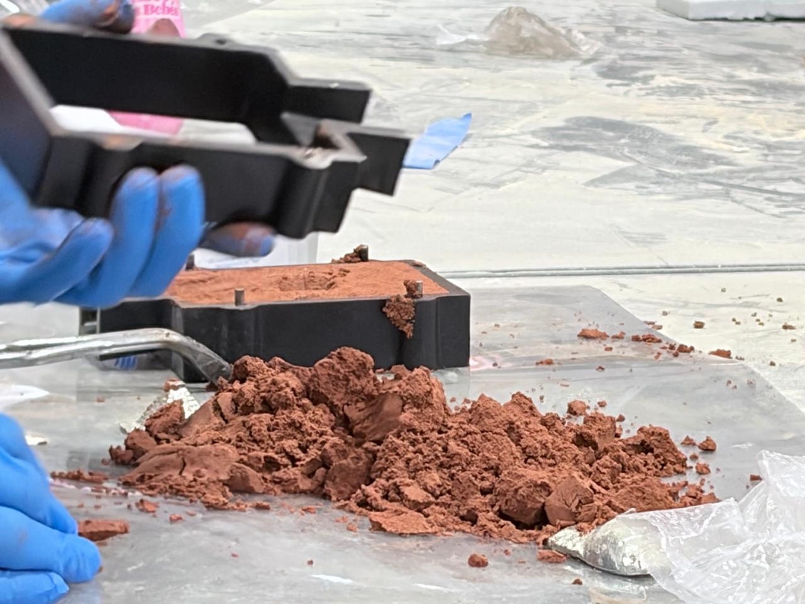
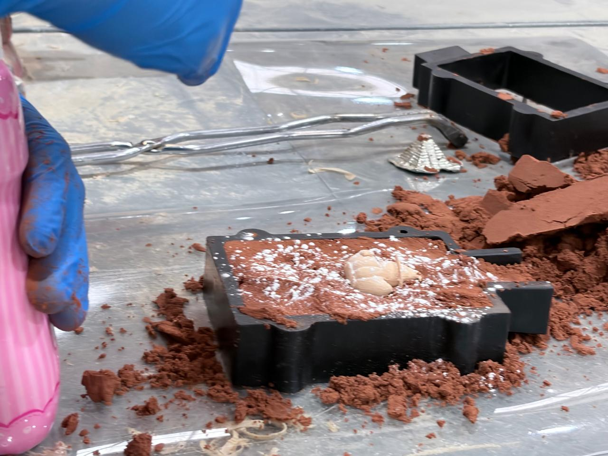
1.3 Formación de la Segunda Mitad y Bebedero
- Se ensambló la parte superior de la caja de moldeo, se rellenó con más arena compactada y se abrió cuidadosamente para retirar el modelo de yeso, dejando la huella exacta en ambas mitades.
- Canal de Alimentación (Bebedero): Se perforó un conducto vertical (bebedero) hacia la cavidad para permitir el ingreso del metal líquido. Finalmente, ambas mitades se cerraron y alinearon listas para recibir la colada.
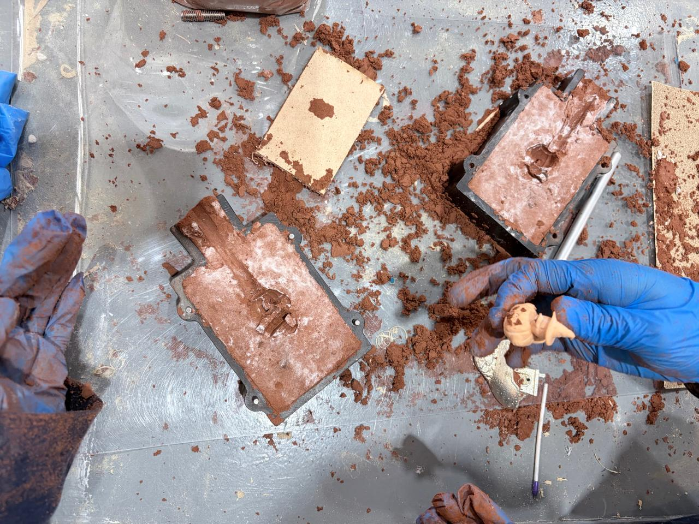
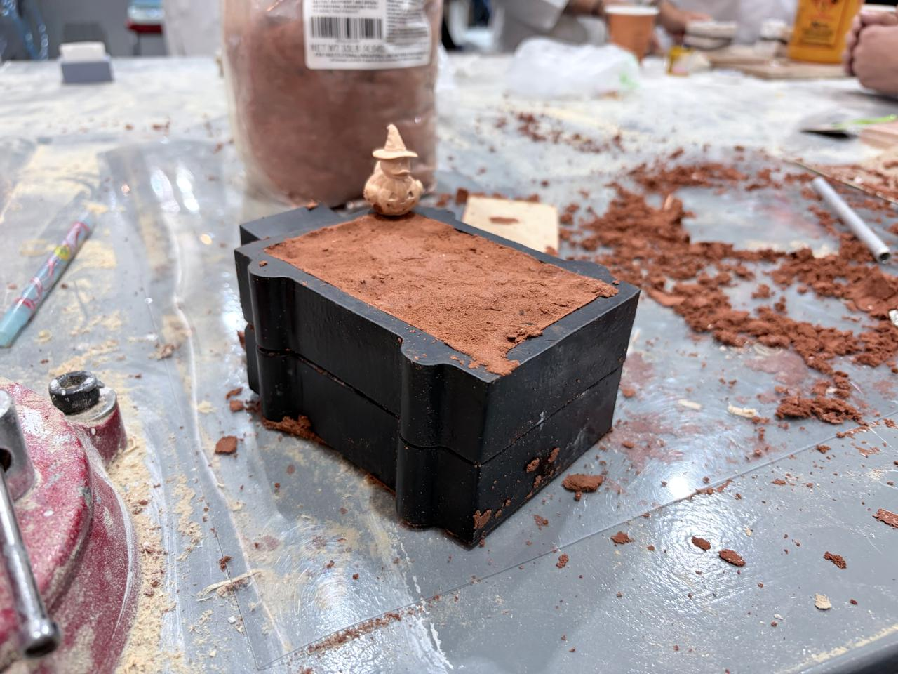
2. Fusión del Metal (Estaño)
2.1 Calentamiento en Horno
Para la pieza metálica se seleccionó estaño debido a su bajo punto de fusión y buena fluidez.
- Se colocó el metal dentro de un crisol y se introdujo en un horno eléctrico de mufla (utilizado comúnmente para fundición y quemado de moldes de inversión/yeso).
- Se configuró el horno hasta alcanzar la temperatura de colada (casting temperature) del estaño, establecida en \(320\text{ }^\circ\text{C}\), esperando el tiempo necesario hasta verificar que el metal estuviera completamente en estado líquido.
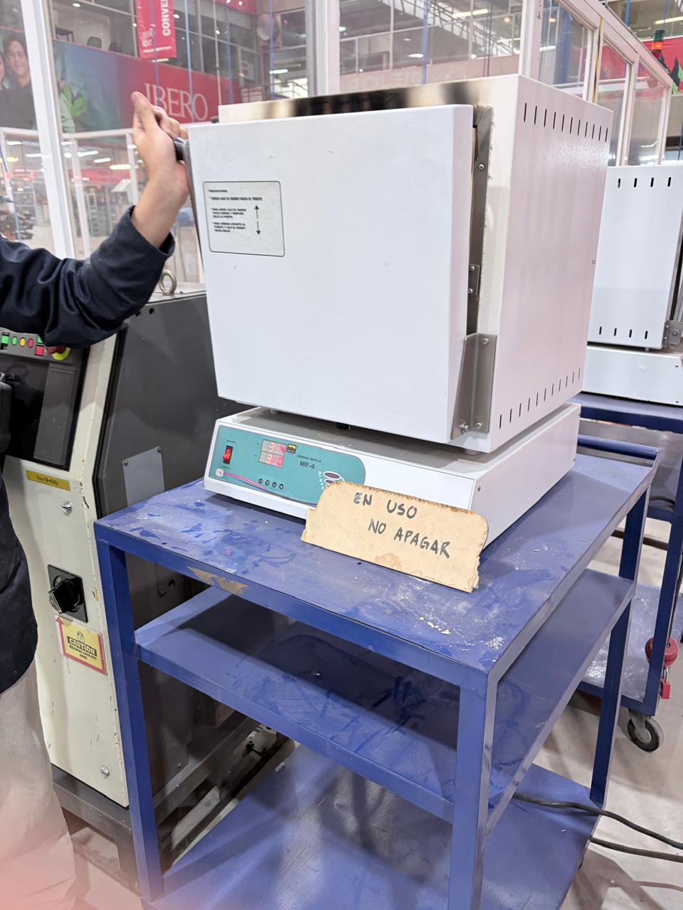
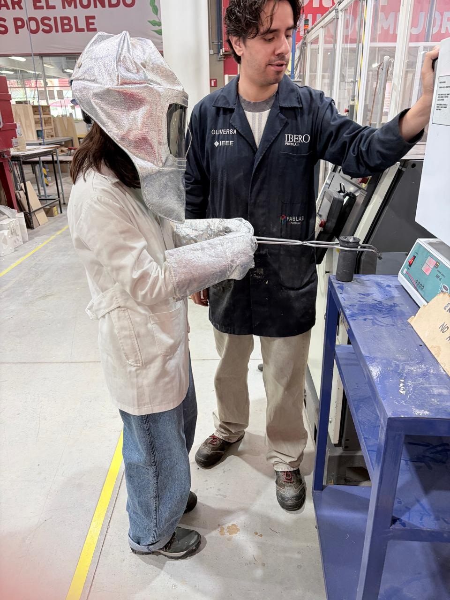
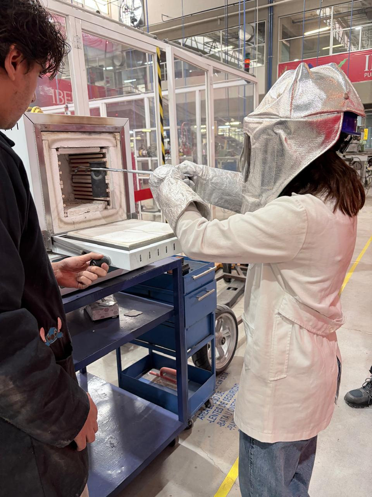
2.2 Extracción del Crisol
Una vez alcanzada la temperatura de \(320\text{ }^\circ\text{C}\), y portando el traje especial de protección térmica, se abrió el horno y se retiró el crisol con el estaño fundido utilizando pinzas largas de fundición para mantener una distancia segura.
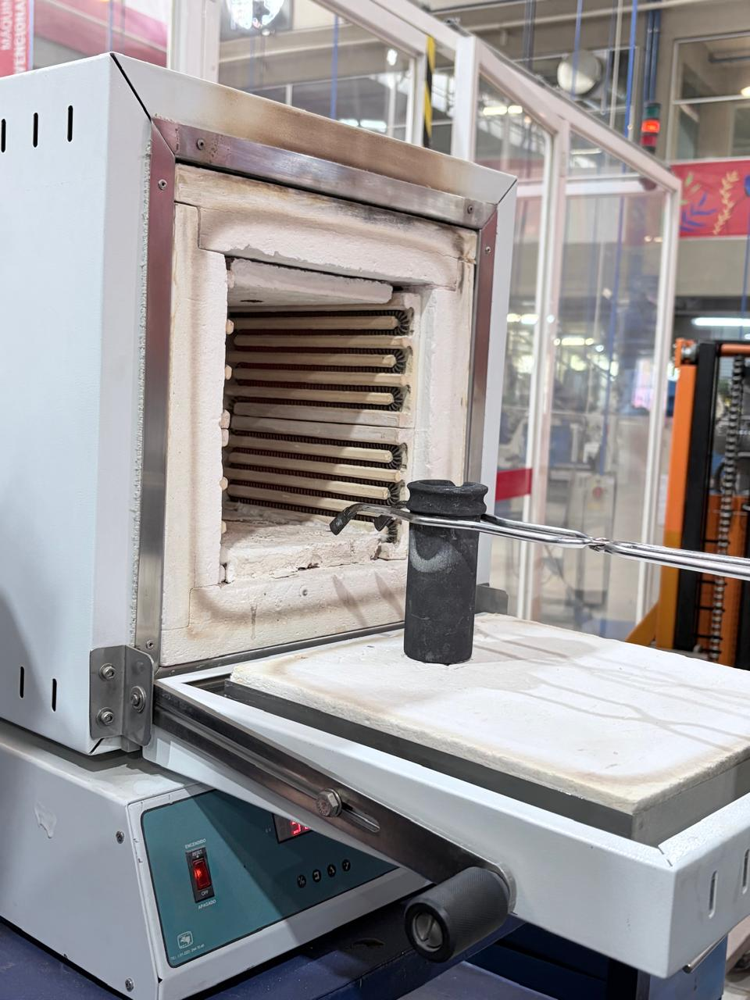
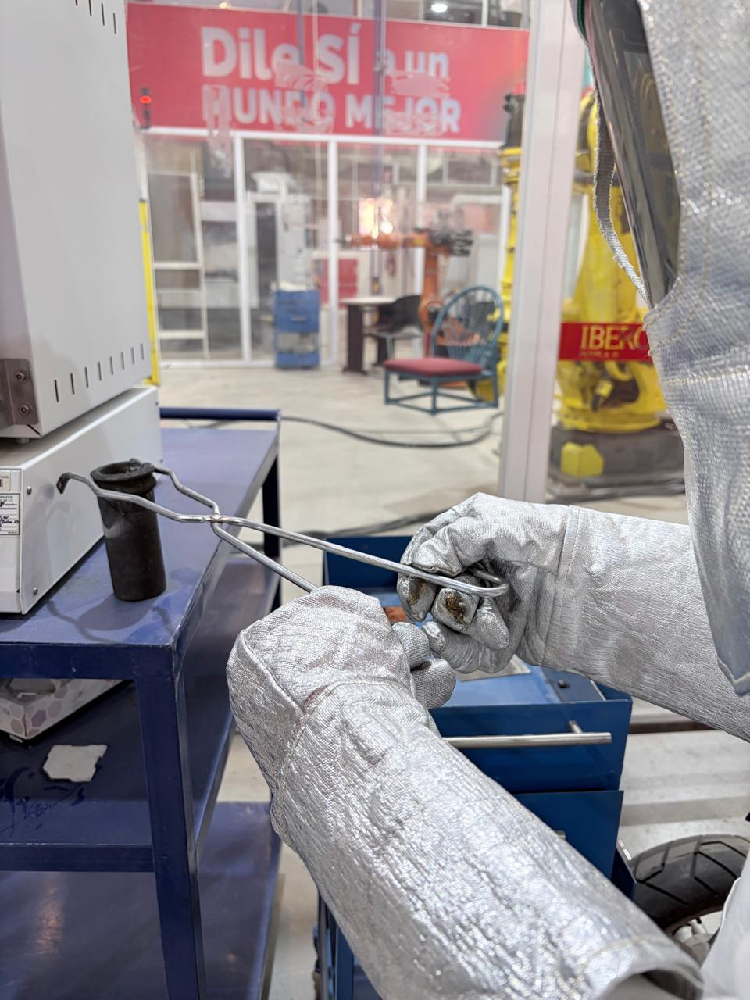
3. Vaciado y Acabado de la Pieza
3.1 Colada en el Molde
El molde de arena armado se colocó previamente sobre una mesa de trabajo metálica (evitando mesas de madera o superficies inflamables ante posibles derrames).
- Con movimiento continuo y controlado, se vertió el estaño líquido a través del bebedero hasta llenar por completo la cavidad del molde.
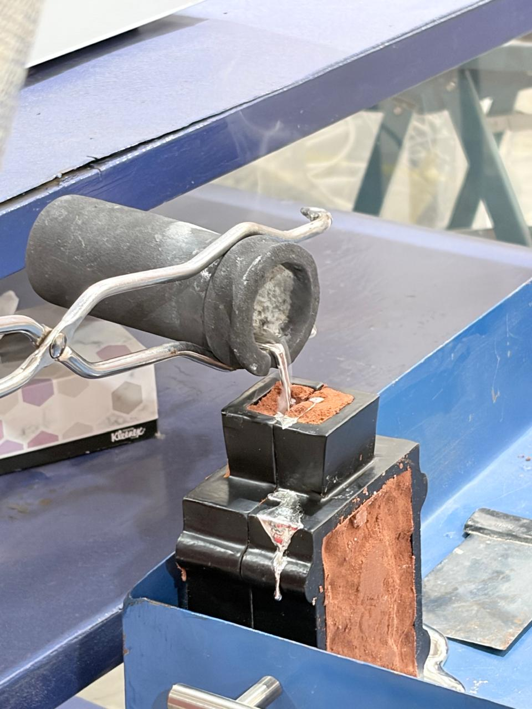
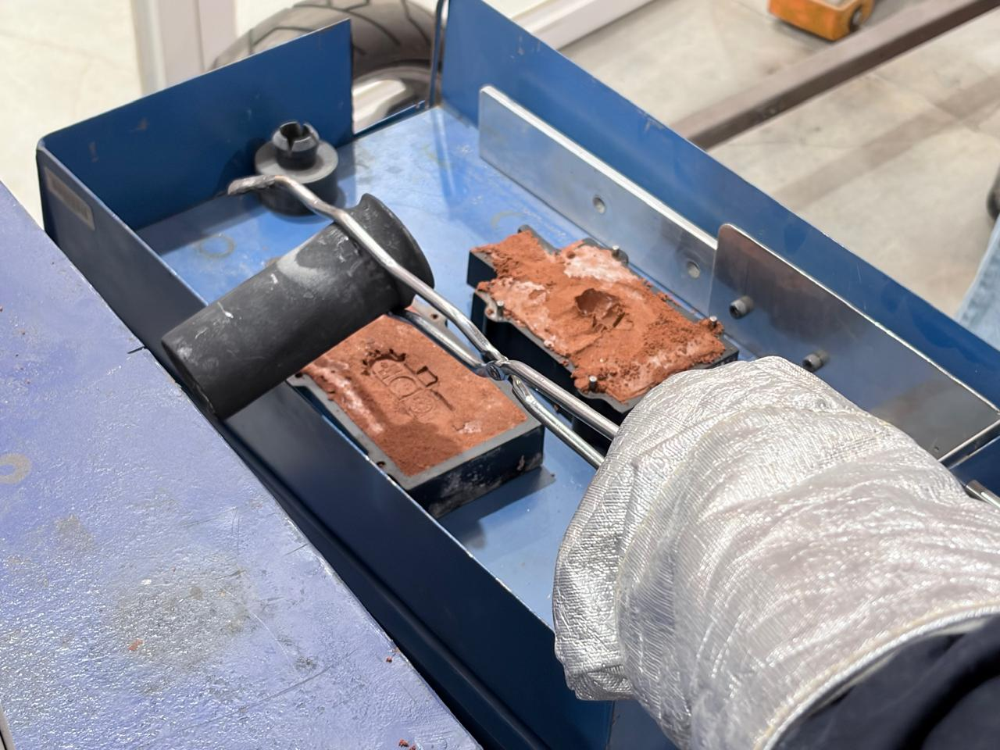
3.2 Enfriamiento, Desmolde y Limpieza
- Solidificación: Se dejó reposar el molde a temperatura ambiente hasta que el estaño solidificó y enfrió lo suficiente para ser manipulado de forma segura.
- Desmolde y Acabado: Se rompió el molde de arena para extraer la pieza metálica. Finalmente, se cortó el excedente de metal correspondiente al canal de entrada (bebedero) y se limaron las rebabas de la línea de partición para obtener el acabado final de la figura.
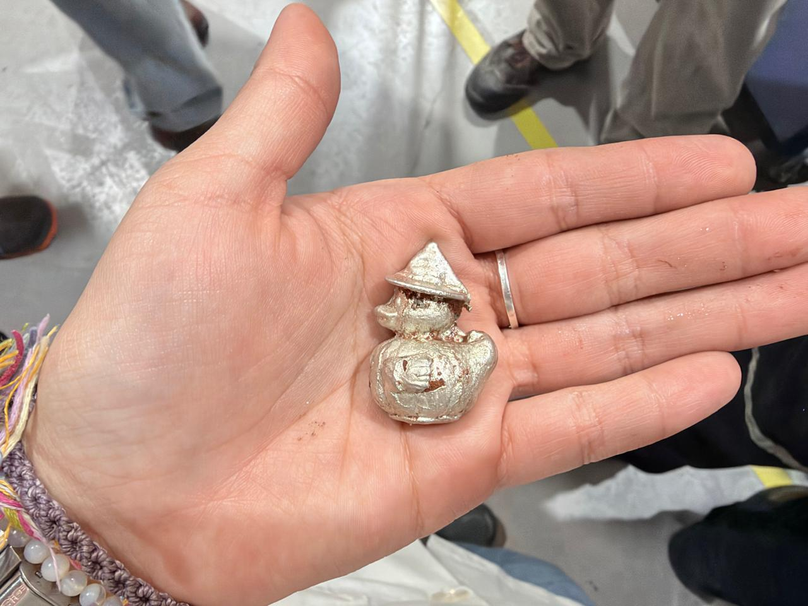